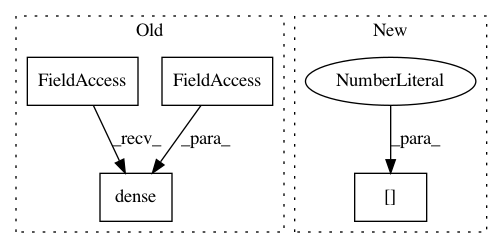

5014fbe46b4398bfdde8918c4a343f8d13ae121d,open_seq2seq/encoders/resnet_encoder.py,ResNetEncoder,_encode,#ResNetEncoder#Any#,28
Before Change
inputs = tf.identity(inputs, "final_reduce_mean")
inputs = tf.reshape(inputs, [-1, self.final_size])
inputs = tf.layers.dense(inputs=inputs, units=self.num_classes,
regularizer=regularizer)
logits = tf.identity(inputs, "final_dense")
return {
"logits": logits,
After Change
super(ResNetEncoder, self).__init__(params, model, name, mode)
def _encode(self, input_dict):
inputs = input_dict["source_tensors"][0]
self.resnet_size = 50
if self.resnet_size < 50:
self.bottleneck = False
In pattern: SUPERPATTERN
Frequency: 3
Non-data size: 4
Instances
Project Name: NVIDIA/OpenSeq2Seq
Commit Name: 5014fbe46b4398bfdde8918c4a343f8d13ae121d
Time: 2018-05-17
Author: igor.a.gitman@gmail.com
File Name: open_seq2seq/encoders/resnet_encoder.py
Class Name: ResNetEncoder
Method Name: _encode
Project Name: asyml/texar
Commit Name: 21403cafc0fed126c8c0582ea75cb85e641efd65
Time: 2017-12-23
Author: shore@pku.edu.cn
File Name: texar/modules/decoders/transformer_decoders.py
Class Name: TransformerDecoder
Method Name: _build
Project Name: OpenNMT/OpenNMT-tf
Commit Name: 8566b142ddf39eb999e6765a216d54c957f526a3
Time: 2019-04-01
Author: guillaume.klein@systrangroup.com
File Name: opennmt/models/sequence_classifier.py
Class Name: SequenceClassifier
Method Name: _call